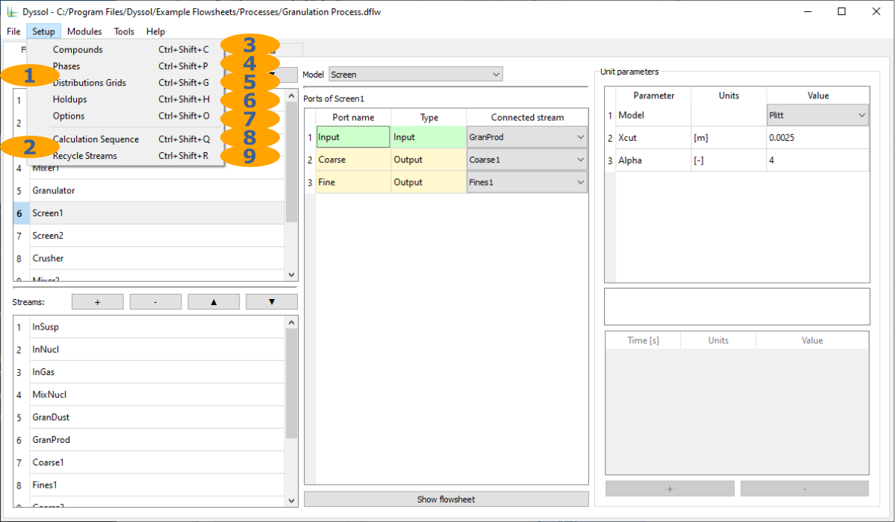
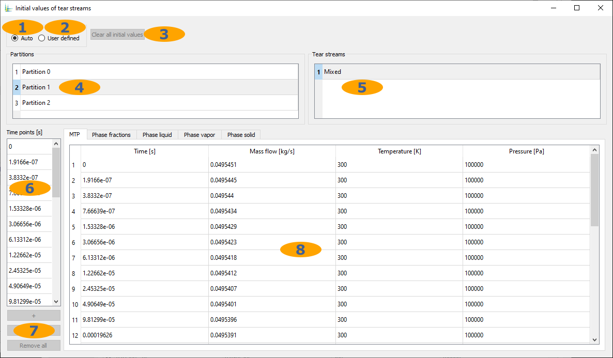
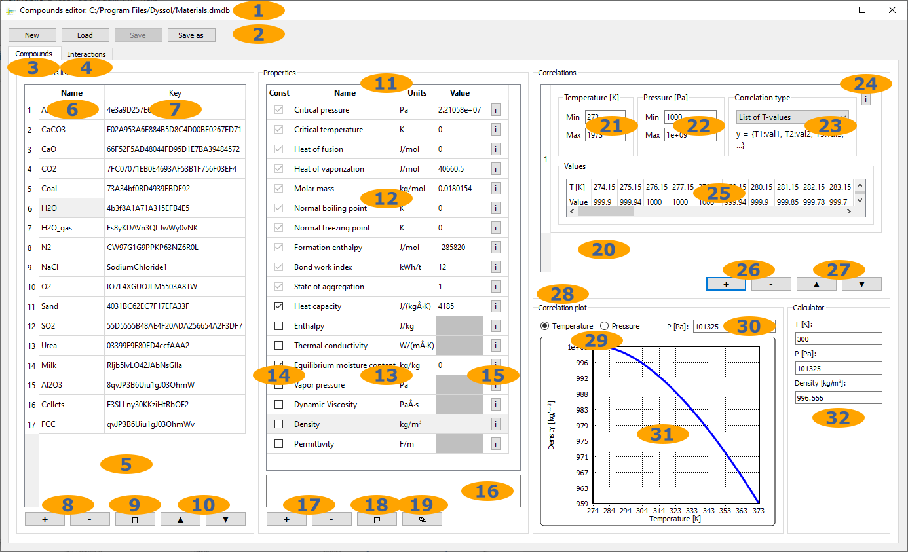
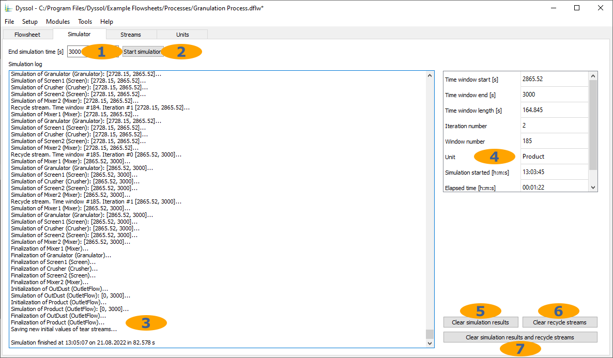

Graphical user interfaced
Dyssol comes with a graphical user interface that allows you to create and customize flowsheets and analyze simulation results.
Menu
You can find File, Setup, Modules, Tools and Help in the main menu bar.
File
{kind=link}
Standard file operations
Save flowsheet as a script file for command line interface
Quick access to previously opened flowsheets
Close the program
Setup
{kind=link}
Main flowsheet setup
Additional flowsheet setup
Compounds editor
{kind=link}
List of available compounds from materials database
List of active compounds in the flowsheet
Add selected compound to the flowsheet
Remove selected compound from the flowsheet
Phases editor
{kind=link}
List of active phases
Phases names
Phases aggregation states
Add new phase to the flowsheet
Remove selected phase from the flowsheet
Grids specification
{kind=link}
Distribution grids for the whole flowsheet
Distribution grids for every specific unit
Active distributed grids in the selected unit or whole flowsheet
Add distributed grid
Remove selected distributed grid
Default distribution by compounds
Distribution type
Number of classes
Entries type: numeric, symbolic
Grid function: equidistant, geometric, logarithmic, manual
Grid boundaries
Units for boundaries
Cells boundaries
Holdups editor
Here, material in inlet streams and holdups can be configured.
{kind=link}
List of units with holdups/inlet streams
List of holdups/inlet streams in the selected unit
List of time points in the selected holdup/inlet stream
Add or remove time points
Overall holdup/stream properties
Phase fractions in the holdup/stream
Compound fractions of the liquid phase
Compound fractions of the gas phase
Compound fractions and distributed properties of the solid phase
{kind=link}
Time point
Mass or mass flow at the corresponding time point
Temperature at the corresponding time point
Pressure at the corresponding time point
{kind=link}
Time point
Mass fraction (0..1) of each defined phase at the corresponding time point
{kind=link}
Time point
Mass fraction (0..1) of each defined compound at the corresponding time point
{kind=link}
Time point
Mass fraction (0..1) of each defined compound at the corresponding time point

Selected time point from the list of time points
Mass fraction (0..1) of each defined compound at the corresponding time point
List of defined distributed properties
Compound or total mixture to set distributed properties
Distributed property to edit
Distributed property to edit
Additional setting for PSD: PSD type
Additional setting for PSD: PSD grid
Values of the distributed property
Insert functional distribution
Functional distribution editor
Function type
Parameters of the functional distribution
Apply all changes made
Options
General options:

Absolute and relative tolerances for convergence calculation
Minimal significant fraction of multidimensional distributed properties
Remove excessive time points from streams during the simulation
Also remove time points from holdups and internal streams
Temperature limits of the lookup table for calculating stream mixtures
Number of temperature intervals of the lookup table for calculating stream mixtures
Options for Waveform relaxation method, Data extrapolation and Convergence methods:
{kind=link}
Initial size of the time window
Minimum allowed size of the time window
Maximum allowed size of the time window
Allowed number of iterations before stop
Window resizing factor
Upper critical limit of iterations before resizing the window
Lower critical limit of iterations before resizing the window
Upper critical limit of iterations before resizing the window, for the first time window
Settings for Convergence methods
Settings for Data extrapolation
Additional options:
{kind=link}
Cache streams data on disk during simulation
Cache holdups data on disk during simulation
Cache internal streams data on disk during simulation
Number of time points to stay in RAM if caching is enabled
Split result
*.dflwinto 2GB files.
Calculation sequence
Here, one can adjust automatically calculated simulation sequence. See also Partitioning and tearing.
{kind=link}
Calculation sequence in the partition
Tear streams in the partition
Automatically recalculate simulation sequence
Add/remove/rearrange partitions, models or tear streams
Recycle streams
Here, one can adjust automatically calculated initial values of tear streams
{kind=link}
Calculate initial values automatically
Set initial values manually
Remove all current initial values
List of partitions
List of tear streams
List of time points in the selected tear stream
Add/remove time points
Initial values
Modules

Dustiness formation tester
Tools
{kind=link}
Program-wide tools
Program-wide settings
Models manager
Configuration of the models library
{kind=link}
List of directories to look for models
Whether to look for models in this directory
Add/remove directory
Rearrange directories
List of available models
Materials database
Configuration of compounds in the global Material database.
{kind=link}
Current file with materials database
Standard operations with materials database file
Configuration of compounds properties
Configuration of interactions between compounds
List of compounds
Compound names
Unique keys of compounds
Add/remove compounds
Create a copy of a selected compound
Rearrange compounds
List of compound properties
Constant compound properties
Temperature-/pressure-dependent compound properties
Whether to treat a temperature-/pressure-dependent property as a constant
User-defined information about the property
Property description
Add/remove a user-defined compound property
Create a copy of a selected property
Edit selected user-defined property
List of correlations defining values of a temperature-/pressure-dependent property
Temperature range of the correlation
Pressure range of the correlation
User-defined information about the correlation
Correlation parameters
Add/remove correlation
Rearrange correlations
Visualization of correlations
First correlation parameter
Second correlation parameter
Correlation plot in 2D
Property calculator
Settings
Application-wide settings.
{kind=link}
Whether to load last opened flowsheet at application start
Open application-wide configuration file
Path to store cache files
Change cache path
Delete all cache files
Help
{kind=link}
Links to online documentation
About
{kind=link}
Version number
Build number
Link to updates
Dyssol license agreement
List of developers and credits
List of used 3rd party libraries
Tabs
Tabs are used to build a flowsheet, run a simulation, and analyze the results. There are Flowsheet, Simulator, Streams and Units tabs.

Flowsheet tab: create flowsheet structure, specify unit parameters
Simulator tab: set simulation time, run and stop the simulation, calculation log and report
Streams tab: streams analysis after the simulation
Units tab: units analysis after the simulation
Flowsheet
{kind=link}
Add/remove units
Rearrange units
List of units
Add/remove streams
Rearrange streams
List of streams
Model selection for each unit
Names of units ports
Types of units ports
Streams connected to ports
Scheme of the assembled flowsheet
List of user-defined parameters of the selected unit
Values of constant unit parameters
Description of the selected parameter
Values of time-dependent unit parameters
Add/remove time point in the time-dependent unit parameter
Simulator
Here you can start your simulation based on your time input.
{kind=link}
Last time point of the simulation interval
Run simulation
Simulation log and report
Simulation progress info
Remove simulated data
Clear initial values of tear streams
Clear simulated data and tear streams
Streams
Here, parameters of streams can be found after simulation.
Table view:
{kind=link}
List of defined streams
List of available stream parameters
Number of time points in the selected stream
Simulation results
Plot view:
{kind=link}
List of defined streams
List of available stream parameters
List of available distributed parameters
Specific compound or total mixture
PSD type for particle size distribution
PSD grid type for particle size distribution
Number of time points in the selected stream
Navigation through all time points in the selected stream
Currently selected time point
Simulation results
Units
Here, parameters of units can be found after simulation.

List of defined units
List of holdups in the selected unit
List of state variables in the selected unit
List of plots in the selected unit
Parameters selection
Time slider
Table view
Plot view
Simulation results